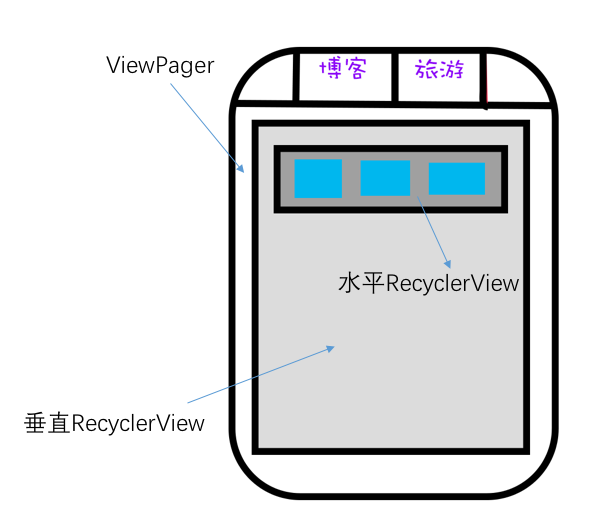

多重嵌套布局下滑动冲突解决方案和思路
Thu, Jan 19, 2017 标签： Development前言
本文主要介绍在开发仿网易新闻客户端遇到的多层控件滑动冲突问题，以及如何控制事件传递的方法和解决问题的过程。
问题复现
一、局部
以下是界面布局的简图，问题分析将根据以下展开。 一共有三层：
最外层是一个Viewpager，如图所示在Viewpager中有两个页面，分别是“博客”和“旅游”。
中间层垂直的RecyclerView。
最内层是水平的RecyclerView。为了方便下文介绍，命名为MyRecyclerView。在其中，有一系列的item，将item命名为ImageViewHolder，并为其增加点击事件(OnClickListener)。如下图蓝色方块所示。

二、问题代码：
item_image.xml
<com.hhxplaying.neteasedemo.netease.widget.HorizontalRecyclerView
xmlns:android="http://schemas.android.com/apk/res/android"
android:layout_width="match_parent"
android:layout_height="@dimen/list_big_image_item_height"
android:id="@+id/rv_subrecycleview"
android:layout_below="@+id/tv_title"
android:layout_centerVertical="true"
android:layout_centerHorizontal="true"
/>
HorizontalRecyclerView.java
public class HorizontalRecyclerView extends RecyclerView {
public HorizontalRecyclerView(Context context, AttributeSet attrs) {
super(context, attrs);
}
public HorizontalRecyclerView(Context context) {
super(context);
}
public HorizontalRecyclerView(Context context, AttributeSet attrs, int defStyle) {
super(context, attrs, defStyle);
}
@Override
public boolean onInterceptTouchEvent(MotionEvent event) {
Log.d("HorizontalImage", "parent onIntercept " + event);
boolean b = super.onInterceptTouchEvent(event);
Log.d("HorizontalImage", "parent onIntercept " + b);
return b;
}
@Override
public boolean onTouchEvent(MotionEvent event) {
boolean t = super.onTouchEvent(event);
Log.d("HorizontalRecyclerView", "parent onTouchEvent " + t);
return t;
}
HorizontalImageRecyclerViewAdapter.java
ImageViewHolder holder = new ImageViewHolder();
holder.imageView.setOnClickListener(this);
三、情境描述：
正常情景：滑动水平列表HorizontalRecyclerView时，如果一开始滑动时，列表是有滑动的空间的。那么子控件会消费事件使得后续事件一直传递，即使当列表最后滑动到尽头后继续滑动，事件也会继续传递给水平滑动控件，所以外部的viewpage不会响应。
问题情景：滑动水平列表/HorizontalRecyclerView时，如果一开始滑动时，列表是没有滑动的空间的，即已经到达尽头。此时外部的Viewpager首先向内传递事件，但是事件无法被内部控件消费（水平列表无法滑动，同时也不满足触发内部点击事件的要求），所以最终触发Viewpager（虽然事件最后还是会被HorizontalRecyclerView拦截和消费）。所以，此时用户滑动改水平列表时，外部的viewpage会滑动。
以上两种情况的log基本相同（不同的是正常情况下onTouch会一直调用），一开始是false的原因是水平列表的item的内部设置了OnClickListen，有可能触发。所以滑动了一段距离后，不可能再触发click，所以返回true。 Log如下所示。
D/HorizontalRecyclerView: parent onIntercept MotionEvent { action=ACTION_MOVE
D/HorizontalRecyclerView: parent onIntercept false
D/HorizontalRecyclerView: parent onIntercept MotionEvent { action=ACTION_MOVE
D/HorizontalRecyclerView: parent onIntercept false
D/HorizontalRecyclerView: parent onIntercept MotionEvent { action=ACTION_MOVE
D/HorizontalRecyclerView: parent onIntercept false
D/HorizontalRecyclerView: parent onIntercept MotionEvent { action=ACTION_MOVE
D/HorizontalRecyclerView: parent onIntercept false
D/HorizontalRecyclerView: parent onIntercept MotionEvent { action=ACTION_MOVE
D/HorizontalRecyclerView: parent onIntercept true
D/HorizontalRecyclerView: parent onTouchEvent true
D/HorizontalRecyclerView: parent onTouchEvent true
换而言之，如果去掉holder.imageView.setOnClickListener(this)，那么只会调用一次onIntercept并返回false，而后onTouchEvent会在第一时间触发。Log如下所示。
D/HorizontalRecyclerView: parent onIntercept MotionEvent { action=ACTION_DOWN
D/HorizontalRecyclerView: parent onIntercept false
D/HorizontalRecyclerView: parent onTouchEvent true
D/HorizontalRecyclerView: parent onTouchEvent true
D/HorizontalRecyclerView: parent onTouchEvent true
所以，如果去掉内部点击事件的话，这个问题处理会简单很多。但是在这里，我们需要内部item响应点击事件。
当HorizontalRecyclerView到尽头时，此时用户水平滑动会导致Viewpager的切换。造成用户的不方便，需要改善。在这种情况下，理想的交互应该是Viewpager不响应此时的水平滑动。
解决思路
第一次尝试解决：
- 思路：当水平列表滑动时，使得Viewpager不再响应水平滑动。
代码： HorizontalRecyclerView.java
@Override public boolean onTouchEvent(MotionEvent event) { switch (event.getAction()) { case MotionEvent.ACTION_MOVE: getParent().requestDisallowInterceptTouchEvent(true); break; case MotionEvent.ACTION_UP: case MotionEvent.ACTION_CANCEL: getParent().requestDisallowInterceptTouchEvent(false); break; } boolean t = super.onTouchEvent(event); Log.d("HorizontalRecyclerView", "parent onTouchEvent " + t); return t; }效果：当ImageViewHolder设置了OnClickListner时，用户慢速滑动HorizontalRecyclerView时，viewpager不会响应，快速滑动时viewpager还是会响应；当ImageViewHolder没有设置了OnClickListner时，用户快速滑动viewpager也不会响应。
为什么内部item是否设置了OnClickListner会影响快速滑动的表现，原因在于HorizontalRecyclerView中的onTouchEvent的语句：
getParent().requestDisallowInterceptTouchEvent(true)
能否及时调用。如果调用晚了，viewpagr已经有了偏移则此语句不会产生效果。
第二次尝试解决：
以上代码有一个问题：用户快速滑动HorizontalRecyclerView的结果不理想（内部设置点击事件），还是和原来一样。 原因上文已经说明了HorizontalRecyclerView 中的onTouchEvent方法调用不及时。
针对这个不及时的问题：考虑在HorizontalRecyclerView的onInterceptTouchEvent进行拦截。代码如下：即用户按下时就阻止外部控件响应。
HorizontalRecyclerView.java
@Override
public boolean onInterceptTouchEvent(MotionEvent event) {
switch (event.getAction()) {
case MotionEvent.ACTION_DOWN:
getParent().requestDisallowInterceptTouchEvent(true);
firstTime = true;
x = event.getX();
y = event.getY();
break;
}
return super.onInterceptTouchEvent(event);;
}
当时经过测试，发现增加以上代码后，会导致无法通过竖直滑动外部的垂直RecyclerView。因为统统都被getParent().requestDisallowInterceptTouchEvent(true)拦截了（可以查看这个方法的源代码，会一直向上递归调用）。
所以，我们希望当判断不能出再出发点击事件时，应该不再拦截外部空间响应垂直滑动的事件。 其中isIntercept变量是来自与水平列表中的Item的onTouch方法中，检测该事件能否发生点击（判断时间和滑动距离）。如果能则变量为false。如果不能满足点击事件则为true，表示外部应该拦截后续事件。
HorizontalRecyclerView.java
@Override
public boolean onInterceptTouchEvent(MotionEvent event) {
boolean temp = super.onInterceptTouchEvent(event);
switch (event.getAction()) {
case MotionEvent.ACTION_DOWN:
getParent().requestDisallowInterceptTouchEvent(true);
firstTime = true;
x = event.getX();
y = event.getY();
break;
}
boolean isIntercept = ((HorizontalImageRecyclerViewAdapter)getAdapter()).isIntercept;
Log.d("HorizontalImage", "parent onIntercept isIntercept:" + isIntercept);
return temp || isIntercept;
}
最后方案：
根据以上的尝试，我们现在理一下思路：
思路： 用户刚点击时，点击事件会到达对内层的水平列表的item，经过判断是否能触发点击事件，并设置标志位isIntercept。如果不能触发，则在外部onInterceptTouchEvent方法中根据标志位isIntercept进行拦截。使得调用外部HorizontalRecyclerView的onTouch方法，并在该方法中判断用户是水平滑动还是竖直滑动。如果是水平滑动着调用getParent().requestDisallowInterceptTouchEvent(true)，如果是竖直滑动不处理。
疑问：内部item的点击事件为什么不用onClick而使用onTouch？ 因为假如使用onClick则无法灵活的对各种MotionEvent进行判断。（当然也可以同时混合使用，onTouch处理拦截标志位，onClick处理点击。只要onTouch方法返回false即可）
代码片段1: 在内部item的onTouch中判断能否触发点击事件。 关键代码是比较初始点位置和当前点位置的距离是否超过阈值。（viewConfiguration.getScaledTouchSlop()）以及 从按下到抬起的时间差是否小于ViewConfiguration.getJumpTapTimeout()。详细介绍请见文末
public boolean onTouch(View v, MotionEvent event) { long pressDuration = System.currentTimeMillis() - pressStartTime; switch (event.getAction()) { case MotionEvent.ACTION_DOWN: { pressStartTime = System.currentTimeMillis(); pressedX = event.getX(); pressedY = event.getY(); isIntercept = false; break; } case MotionEvent.ACTION_MOVE: if (pressDuration <= ViewConfiguration.getJumpTapTimeout() && distance(pressedX, pressedY, event.getX(), event.getY()) <= viewConfiguration.getScaledTouchSlop()) { } else { //此标志位相当重要，不能用requestDisallowInterceptTouchEvent()方法代替. //@link https://developer.android.com/guide/topics/ui/ui-events.html#TouchMode // 也可根据ViewGroup.java的onInterceptTouchEvent()源码查看这个方法逻辑。 isIntercept = true; } break; case MotionEvent.ACTION_UP: { if (pressDuration <= ViewConfiguration.getJumpTapTimeout() && distance(pressedX, pressedY, event.getX(), event.getY()) <= viewConfiguration.getScaledTouchSlop()) { //doSomething() } else { isIntercept = true; } break; } } return true;}
代码片段2: 判断是水平滑动还是竖直滑动。 思路是比较水平滑动距离和竖直滑动距离的大小来判断。firstTime表示本次事件认定为水平滑动或者竖直滑动后不再变更判断结果。
@Override public boolean onTouchEvent(MotionEvent event) { switch (event.getAction()) { case MotionEvent.ACTION_DOWN: getParent().requestDisallowInterceptTouchEvent(true); firstTime = true; x = event.getX(); y = event.getY(); break; case MotionEvent.ACTION_MOVE: if (firstTime) { float deltaX = Math.abs(x - event.getX()); float deltaY = Math.abs(y - event.getY()); if (deltaX > 1 || deltaY > 1) { // 水平滑动距离大于两倍的垂直距离才判断为水平 if (deltaX > deltaY * 2) { getParent().requestDisallowInterceptTouchEvent(true); } else { getParent().requestDisallowInterceptTouchEvent(false); } firstTime = false; } } break; case MotionEvent.ACTION_CANCEL: case MotionEvent.ACTION_UP: case MotionEvent.ACTION_OUTSIDE: getParent().requestDisallowInterceptTouchEvent(false); ((HorizontalImageRecyclerViewAdapter)getAdapter()).isIntercept = false; break; } return super.onTouchEvent(event);}
最终代码
见项目的https://github.com/freedomofme/Netease 的HorizontalRecyclerView.java和HorizontalImageRecyclerViewAdapter
文本记录了这个问题探索的正确轨迹，没有记录在实际开发中所走的弯路。写的不正确和含糊不清之处，还望斧正。
附录
ViewConfiguration.java
点击时间间隔
/**
* Defines the duration in milliseconds we will wait to see if a touch event * is a tap or a scroll. If the user does not move within this interval, it is * considered to be a tap.
*/
private static final int TAP_TIMEOUT = 100;
/**
* Defines the duration in milliseconds we will wait to see if a touch event * is a jump tap. If the user does not complete the jump tap within this interval, it is * considered to be a tap.
*/
private static final int JUMP_TAP_TIMEOUT = 500;
点击距离间隔
/**
* @return Distance in dips a touch can wander before we think the user is scrolling * * @deprecated Use {@link #getScaledTouchSlop()} instead.
*/
@Deprecated
public static int getTouchSlop() {
return TOUCH_SLOP;
}
//这是默认值 8dp。
private static final int TOUCH_SLOP = 8;
/** * @return Distance in pixels a touch can wander before we think the user is scrolling */
public int getScaledTouchSlop() { return mTouchSlop; }